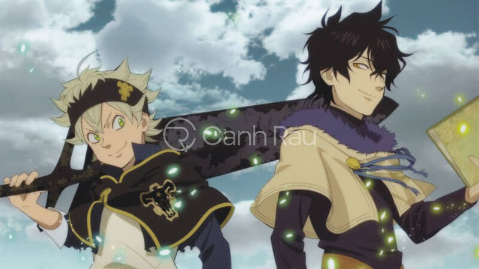
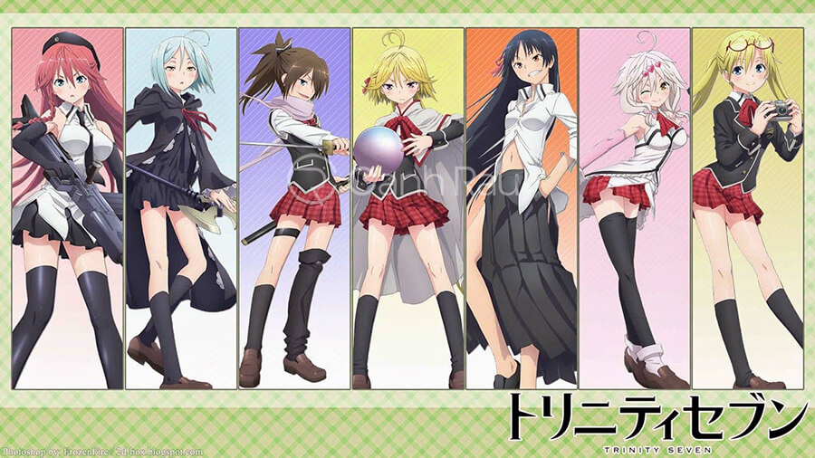
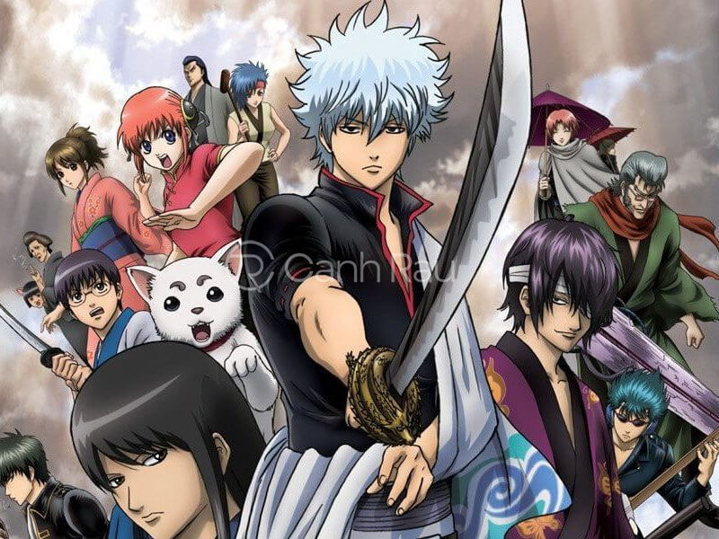
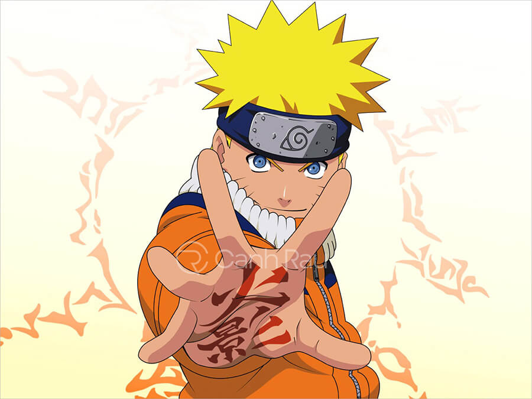
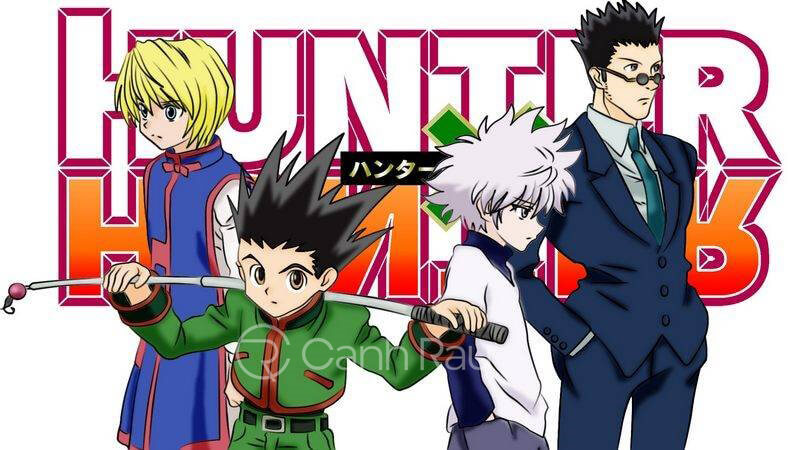
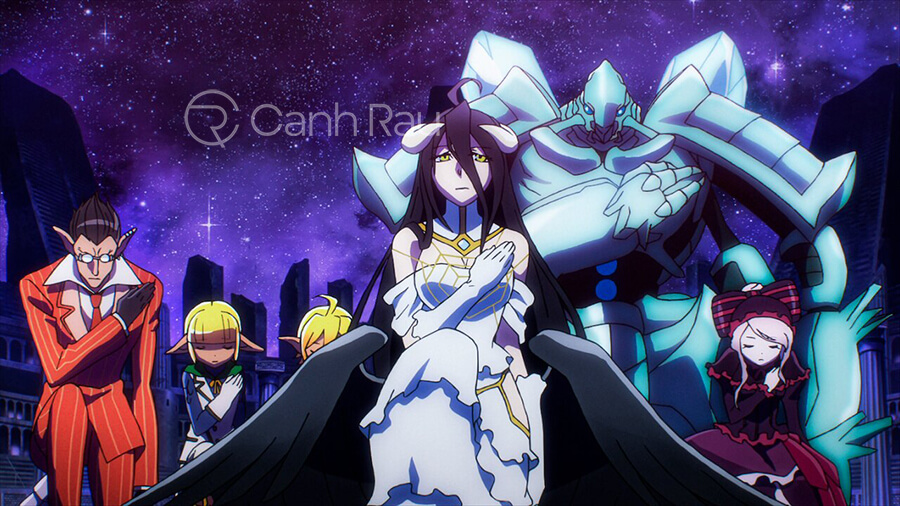
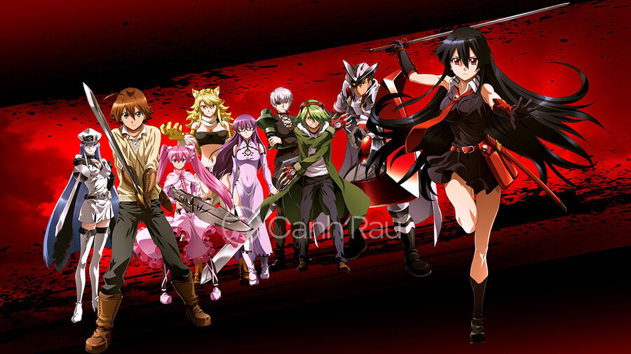
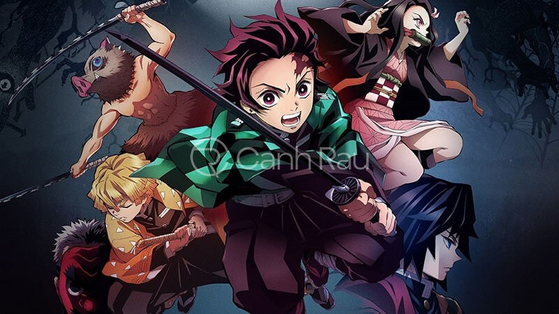

-Black clover là anime hành động xen lẫn yếu tố phép thuật cực hay kể về hai đứa trẻ mồ côi Asta và Yuno, được nuôi dưỡng tại nhà thờ ở một vùng ngoại ô. Nơi mà 2 cậu bé sinh sống tất cả mọi người đều có thể sử dụng phép thuật. Tuy cùng nhau lớn lên trong một môi trường, trong khi Yuno là thiên tài sở hữu sức mạnh to lớn thì Asta lại không có tài cán gì. Sau này thân phận thực sự của Yuno hé lộ, cậu là hoàng tử Vương quốc Spade, được ban sách phép cỏ 4 lá.

Phim Thế giới phép thuật
-Tuy không sử dụng được phép thuật, bù lại Asta rất chăm chỉ luyện tập thể lực. Một ngày kia, Asta nhặt được cuốn phép thuật hình cỏ 5 lá quý hiếm, hành trình trở thành pháp sư lừng danh bắt đầu từ đây. Cả hai cùng cạnh tranh để xem ai sẽ trở thành Ma pháp vương mạnh nhất. Black clover có nhiều tình tiết gay cấn, mạch phim lôi cuốn, xứng đáng là một trong top anime action hay nhất mọi thời đại.
-Trinity Seven là một trong những bộ anime hành động hay nhất hiện nay nhận nhiều tình cảm từ đông đảo khán giả. Nội dung phim kể về Arata Kasuga – cậu thiếu hiền lành, sống cùng anh họ Hijiri Kasuga trong thị trấn nhỏ. Một ngày, hiện tượng lạ xuất hiện, phá hủy sự yên bình ấy khiến nhiều người mất tích trong đó có cả Hijiri. Trước khi biến mất, Hijiri đã để lại cuốn sách ma thuật giúp Arata tạo ra ảo ảnh về cuộc sống bình thường. Đồng thời cũng khiến cậu quên đi những việc đã xảy ra trước đó.

Phim Trinity Seven
-Lilith Asami – nữ pháp sư được cử đến để điều tra sự việc, cô hé lộ cho Arata rằng anh họ vẫn còn sống và giúp cậu nhớ lại mọi thứ. Arata quyết định học phép thuật tại Học viện Hoàng gia Biblia thần bí để giải cứu Hijiri. Tại đây, bảy pháp sư tài giỏi sở hữu sức mạnh phi thường đã huấn luyện cậu trở thành pháp sư mạnh nhất. Arata liệu có đưa anh họ quay trở về, những điều bí ẩn nào sẽ được giải đáp. Để biết được diễn biến câu chuyện, hãy đón xem bộ phim anime hành động hấp dẫn này để biết câu trả lời nhé!
-Tiếp nối danh sách những bộ phim anime hành động hay nhất hiện nay là Gintama. Phim lấy bối cảnh về kinh thành Edo ở thế kỷ 19, nền khoa học kỹ thuật phát triển vượt bậc, người ngoài hành tinh (Amanto) xâm lược. Dù các samurai đã cố gắng chiến đấu đánh bại Amanto nhưng không thành công. Sakata Gintoki – một samurai có tính cách lập dị, được Shimura ngưỡng mộ bởi Gintoki đã cứu chị gái của cậu ta thoát khỏi nguy hiểm.

Phim Gintama
-Sau đó, họ cùng nhau giải cứu Kagura – cô bé người ngoài hành tinh với sức mạnh đáng kinh ngạc. Cả 3 thành lập nên Vạn Sự Ốc Gin-chan, làm thuê kiếm tiền mưu sinh. Công việc chính của nhóm là loại trừ kẻ ác, hợp tác với đội cảnh sát để thâu tóm bọn tội phạm nguy hiểm. Gintama là một bộ phim anime hành động có nội dung khá hay, đan xen giữa những thước phim kịch tính là yếu tố hài hước, mang lại nhiều cung bậc cảm xúc cho khán giả.
-One punch man là một trong những bộ phim hoạt hình Nhật Bản vô cùng nổi tiếng, chuyển thể từ bộ manga cùng tên được nhiều người yêu thích. Nội dung phim kể về siêu anh hùng đầu trọc Saitama, luôn làm việc chính nghĩa và cống hiến không ngừng nghỉ. Anh sở hữu sức mạnh vô cùng lớn, mọi kẻ địch sẽ được giải quyết nhanh gọn chỉ bằng một cú đấm. Đánh trận nào thắng trận đó, Saitama cảm nhàm chán vì không có đối thủ ngang tài ngang sức.
Phim One punch man
-Anh bắt đầu cuộc hành trình đi tìm kẻ mạnh để so tài, gặp gỡ được nhiều người bạn và thu nhận Genos làm đệ tử. Vì cái đầu không mọc được tóc mà Saitama bị mọi người coi thường, cho rằng anh giả mạo làm người hùng. Saitama đã gia nhập vào Hiệp hội anh hùng, trải qua nhiều thử thách, đập tan âm mưu kẻ ác, nỗ lực chứng minh bản thân. One punch man xứng đáng lọt top 10 anime hành động hay nhất, nhờ sở hữu cốt truyện hấp dẫn, các thước phim đẹp mắt mãn nhãn người xem.
-Naruto là luôn nằm trong top những bộ phim anime hay nhất, gắn liền với tuổi thơ của nhiều thế hệ khán giả. Bộ phim xoay quanh cuộc đời của Uzumaki Naruto – thiếu niên lanh lợi, hiếu động. Cậu luôn cố gắng để khẳng định bản thân, hoàn thành ước mơ trở thành Hokage. Do bị con quái vật nguy hiểm là Cửu Vĩ Hồ phong ấn trong cơ thể, nên Naruto bị dân làng dị nghị, bạn bè xa lánh.

Phim Naruto
-Cơ duyên đã đưa Naruto đăng ký vào Học viện Ninja, nơi mà cuộc đời cậu được thay đổi hoàn toàn. Naruto chăm chỉ trau dồi kiến thức, nỗ lực rèn luyện, sử dụng thành thạo nhiều loại phép, trong đó có Ảnh phân thân chi thuật. Cậu có công lao rất lớn khi tiêu diệt được nhiều quái thú, cứu mọi người thoát khỏi nguy hiểm. Từ đó, mọi người dần có cái nhìn khác về Naruto và yêu quý cậu hơn.
-One Piece thuộc top anime action hay và kinh điển nhất, chiếm được nhiều tình cảm của khán giả. Nhân vật chính Monkey D. Luffy – cậu bé luôn khao khát trở thành vua hải tặc lừng danh. Để chinh phục ước mơ của mình, Luffy đã chiêu mộ thêm các đồng đội để thành lập Hải tặc Mũ Rơm. Mỗi một thành viên đều có ngành nghề, hoàn cảnh khác nhau. Luffy đã giúp đỡ họ vượt qua khó khăn bằng tấm lòng chân thành nhất, khiến tất cả mọi người cảm động nên đã nguyện ý cùng cậu theo đuổi đam mê.
Phim One piece
-Cuộc hành trình của Hải tặc Mũ rơm bắt đầu từ đây. Họ phải vượt qua nhiều thử thách, thoát khỏi truy đuổi của Chính phủ, đối đầu với các băng nhóm cướp biển khác. Liệu rằng Hải tặc Mũ rơm có đạt được mục tiêu tìm ra One Piece – kho báu lừng danh mà bất cứ ai cũng khao khát sở hữu.
-Hunter x hunter là cũng là một trong top 10 anime hành động hay nhất mọi thời đại được chuyển thể từ bộ manga nổi tiếng cùng tên. Nội dung phim kể về hành trình trở thành thợ săn của cậu bé 12 tuổi – Gon Freecss. Cha cậu cũng là một Hunter chuyên nghiệp, nhưng vì lý do nào đó đã rời bỏ đứa con trai bé bỏng của mình. Gon đăng ký tham gia cuộc thi Hunter, sau đó làm quen được với 3 người bạn là Leorio, Kurapika và Killua.

Phim Hunter x Hunter
-Tuy tính cách và xuất thân khác nhau, nhưng họ đều chung hoài bão, phấn đấu để hoàn thành mục tiêu. Quá trình biến giấc mơ thành hiện thực rất gian nan, cả 4 người phải đối mặt với nhiều cửa ải khó khăn. Qua đó, tình bạn của họ càng trở nên khăng khít và mở mang thêm kiến thức về nghề thợ săn.
-Overlord là một trong những bộ phim anime hành động được lấy bối cảnh thời đại công nghệ phát triển vượt bậc trong tương lai. Khi đó, những trò chơi thực tế ảo ngày càng phổ biến, thu hút được nhiều người chơi. Momonga – game thủ cừ khôi, quyết định bám trụ đến giây phút cuối cùng trong trò Yggdrasil, trước khi các máy chủ đóng cửa.

Phim Overlord – Lạc vào thế giới game
-Nào ngờ, hệ thống vẫn hoạt động, Momonga bị mắc kẹt trong trò chơi và bị đưa đến thế giới khác với thân phận là nhân vật trong game. Vị thủ lĩnh của lăng tẩm Nazarick giờ đây lại rơi vào hoàn cảnh 3 không: không gia đình, không bạn bè, không địa vị. Liệu rằng Momonga sẽ vượt qua như thế nào, điều mới mẻ gì đang chờ cậu khám phá. Hãy theo dõi hết phim anime hành động siêu hấp dẫn này để biết diễn biến câu chuyện.
-Akame ga kill kể về chiến binh Tatsumi cùng hai người bạn thân đã rời quê hương lên chốn thủ đô phồn hoa. Mục đích của họ là kiếm thật nhiều tiền để giúp đỡ ngôi làng thoát khỏi cảnh nghèo khó. Đời không như mơ, cả 3 bị người thành phố lừa gạt và tra tấn cho đến chết, chỉ riêng Tatsumi may mắn thoát nạn. Cậu được nhóm sát thủ Night Raid giải cứu khỏi tổ chức bắt cóc người, sau đó quyết định gia nhập vào đội nhóm.

Phim Sát thủ Akame
-Night Raid được thành lập để lật đổ vị Tể tướng mưu mô xảo quyệt, thao túng nhà vua để đạt mục đích cá nhân. Tatsumi cùng các thành viên tham gia vào kế hoạch lật đổ kẻ ác, đề cao chính nghĩa. Akame ga kill sở hữu nhiều thước phim đẹp mắt, các tình tiết kịch tính, nội dung hấp dẫn. Xứng đáng là một trong những bộ anime hành động hay nhất mà bạn không thể bỏ lỡ.
-Kimetsu no yaiba là một trong những anime hành động mới được phát sóng gần đây. Bối cảnh của phim nói về thời kỳ Đại chính, các tin đồn về loài quỷ ăn thịt người đang ẩn náu trong rừng ngày cả phổ biến. Kamado Tanjiro – cậu thiếu niên hiền lành, tốt bụng, sống cùng người thân trên vùng núi cao. Cuộc sống yên bình đó bị xáo trộn khi loài quỷ dữ tấn công gia đình cậu. Tanjiro và em gái Nezuko may mắn sống sót nhưng không may Nezuko lại bị biến thành quỷ.

Phim Thanh gươm diệt quỷ
-Vì muốn cứu em gái thoát khỏi tình cảnh đó, Tanjiro đã tham gia vào Đội diệt quỷ sau khi nhận được lời giới thiệu của Thủy trụ Tomioka Giyu. Cậu chăm chỉ rèn luyện để trở thành kiếm sĩ tài giỏi, quyết tâm trả thù cho gia đình. Những thử thách nào đang chờ Tanjiro phía trước? Liệu cậu có giúp Nezuko trở lại thành con người? Lời giải đáp sẽ có trong 26 tập phim Thanh gươm diệt quỷ.